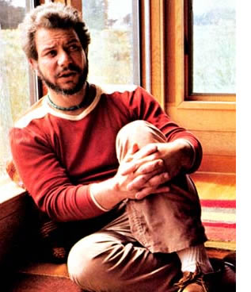
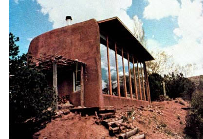
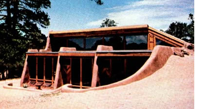
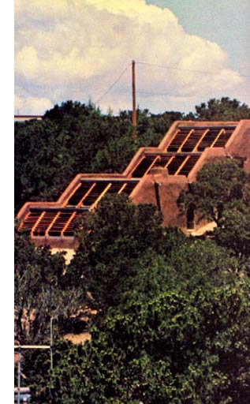
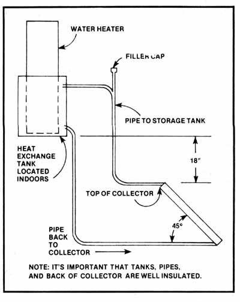

There's a new breed of architect stirring in the land, a breed that you should get to know. Because it has The Secret . . . The Secret that can free you from the utility companies and so many of the other entities in our corporate society that demand-and get-their daily ransom, their daily pound of flesh, from you.
Think of a world of beauty and freedom. A world in which all the buildings nestle into the landscape as naturally as if they'd always been there. A world in which your house is built almost entirely of earth and stone and timber and costs you as little as $.9.00 a square foot. A world in which that house-once completed-keeps you and your family warm and snug and dry and comfortable for the rest of your lives . . . while never costing you a penny for electricity, or oil, or any other form of commercially available energy.
Farfetched? Not at all. Because there is a whole new mutant spore of architects springing up among us. Architects who are, in many ways, actually throwbacks to our wisest and most nature-oriented ancestors. And those architects have already started to create the world of beauty and freedom which we've just glimpsed.
David Wright is one of those new designers.Some would even say the best of the lot. They might be right. Because David Wright has an unusual power: He has learned to peer into the past and rediscover ancient principles that allow, him to propel the present into the future.
During the past three or four years, David Wright has designed over 80 "sun tempered" and "passively solar conditioned" homes. Some of them have cost as little as $8.00 a square foot to construct. Othersjust because of the way they're positioned and put together and without any help from space heaters or air conditioners-now supply the people who live in them with almost 100% of all the heating, cooling, and other "conditioning" they need to remain comfortable. And most of those houses have been largely built of earth and stone and timber taken directly from the areas in which they've been constructed.
There is something very pure and very powerful about what David Wright is doing. And the ramifications of his work may eventually be strong enough to shake the pillars of the corporate society which now dominates us, tear away the scales of arrogant ignorance that blind our culture's eyes, and set us all free in a new life of environmentally sound self-relianceand self determination.
But where does such a man come from . . . and how does he develop his skills? The following interview, conducted by MOTHER's Travis Brock, answers those questions and traces David Wright to his present (93% heating and cooling self-sufficient) home on the coast of northern California. More details about various Wright designs will appear in future issues of this magazine.
PLOWBOY: David, for the past few years there's been a lot of talk among environmentalists about the development of a "soft" or a "gentle" technology . . . a technology that will provide us with a comfortable way of life, while substantially lessening-or doing away with altogethermankind's rape of the planet. Yet while many have been talking, only a few have been doing. And you're one of the few.
I'd like to know "why you"? Why have you been able to develop insights into architectural design and the use of solar energy that have eluded more experienced and occasionally much better financed researchers? What is there in your background that has made this possible? What has set you on the path you now follow?
WRIGHT: I was born here in California . . . up in the foothills of the Sierra NEVADAS--February 13, 1941-and I spent my youth as a boy scout out in the hills gaining an appreciation of nature. I decided at about the age of 12 that I wanted to be an architect and I received an Associate of Architecture degree from Sierra College in Auburn, California in 1960. After that-in 1964came a B.S. in Architectural Engineering from California Polytechnic down in San Luis Obispo . . . and after that I joined the Peace Corps.
PLOWBOY: Why the Peace Corps?
WRIGHT: To avoid the draft and because the Corps offered an immediate work opportunity. As a Peace Corps volunteer, was instantly shipped off to Africa and employed as an architect in the country of Tunisia. I spent a year there and got several interesting projects underway. Then I was transferred to Guinea in West Africa to design a special project-an agricultural junior college-way out in the jungle.
That was where I had my first real taste of working with people on a grassroots level. We trained groups of natives to make CINVA Ram blocks from locally available materials and that was practically all we had to work with, except for some Czech, Russian, and Chinese hardware.
PLOWBOY: What were those "locally available materials" that you used in Guinea?
WRIGHT: Beautiful hardwoods, softwoods, and-of courseearth for the CINVA Ram blocks. We had a certain amount of imported cement for concrete and glazing and things like that . . . but almost all the rest of the main structural materials came from within 15 miles of the school we were building.
I was in Africa from 1964 to 1966 . . . and that's where I got my feeling for earth forms. Almost everything in Tunisia was built out of the earth-when they mixed mud and rocks together to construct walls, they called it "agglomerate"-and I grew to love the idea of taking something right out of the ground and building with it. I had never really seen that done before.
I even had the opportunity, while I was in Africa, of going down to Matmata--which is in southern Tunisia-and staying in one of the troglodyte dwellings down there.
PLOWBOY: Those are the underground communities there on the edge of the Sahara Desert, aren't they? I believe that part of the movie Star Wars was filmed in those troglodyte dwellings.
WRIGHT: Right. Matmata is smack on the edge of the Sahara, where it's not at all uncommon for the temperature to drop down to 40° Fahrenheit at night and then shoot all the way up to 120° the following day. The region has wild seasonal temperature swings, too . . . extremely hot summers and very cold winters. And a lot of wind, but very little rainfall. It's a tremendously harsh environment to live in.
But people do live there. And they live there in amazing comfort, considering all they've got going against them. What they do is they just dig holes about 40 feet across and approximately 30 or 40 feet deep in the ground. And then they tunnel their homes out horizontally from these pits.
There's simply a wonderful system of caves running back from these big holes in the ground, and they're absolutely delightful to live in. The temperature down in those underground homes stays about 65° year round. The people who live there are in out of the wind, and they've rigged up ways to collect the rain that falls into the pits. It's just a very simple, straightforward-but absolutely terrific! -solution to their problems.
PLOWBOY: A solution, probably, that was evolved over a fairly long period of time.
WRIGHT: Oh sure. That's what's so good about the indigenous, or native, architecture that has developed naturally in so many parts of the world. It frequently just evolves and evolves and evolves . . . a little bit at a time, as the lifestyle in a given area advances. And by the time it's really served the people living there for a few hundred years, why, it's pretty good architecture. It may look simple and even crude compared to the architecture of the industrialized world . . . but everyone who lives there understands it, it's comfortable, it probably doesn't cost much, it uses only indigenous materials, and it requires very little energy and no complicated tools for its construction, repair, and operation.
PLOWBOY: Let's see now. You were in Africa from 1964 to 1966 ...and then....
WRIGHT: And then I came back to the States and "paid my dues", so to speak, to the architectural profession here. I worked at several different jobs, just gaining experience . . . but all the time trying to put my finger on something that was bothering me . . . trying to figure out what it was that, deep down, I somehow knew had to be done.
This all came to a head along about 1970. I was working in Santa Cruz-down below San Francisco-just putting up little redwood jewel-box houses on the California coast . . . and I got sort of disenchanted. It was very much a money trip, instead of the peopleserving thing I wanted to do. I was also ge tting really turned off by what I saw happening to the environment down there.
Santa Cruz County, for instance, granted something like 500 building permits in a single week. A very fragile, beautiful area was being jammed with houses and people. And Monterey Bay-a huge body of water-was suddenly closed to all swimmers because of typhoid that had come out of Fort Ord, a military base there on the coast. And then San Francisco Bay Area smog started pouring down along Highway 17 and through the pass to Santa Cruz.
That smog was the last straw. I had a friend in Santa Fe, New Mexico that I'd been in the Peace Corps with, and I went to visit him. This was Christmas time and while I was there in Santa Fe I met Bill Lumpkins, who is sort of "Mr. Adobe" in the Southwest.
PLOWBOY: And I'll bet you found a way to work with him.
WRIGHT: I immediately struck up a very close relationship with Bill and told him I was going to quit my job in California and come to work for him. He said OK and I showed up the following June and he gave me a job and I apprenticed under Bill. I had passed all my exams in California but I was still an architect-in-training at the time. So I worked with Bill for three years and really learned the basics of adobe and started to understand what a good low-energy material it is and what good karma and sculptural qualities it has.
PLOWBOY: Yes. Adobe can be so beautiful. And in the hands of someone who knows how to use it, it can seem to just flow out and wrap around a space and do all kinds of things.
WRIGHT: Absolutely. You can do anything with it. You can punch a window in wherever you want to. You can modify it in almost any way at any time. As a matter of fact, the old traditional adobes were just an ongoing building process. Someone would build an adobe house and then, as they had more children or the next generation took over or the place was sold to another family, it was expected that the home would be expanded or modified to suit the new tenants. The old adobes were really built for change.
This is kind of a revolutionary idea to most modern designers...but it was'nt revolutionary to the primitive cultures of this planet at all.
Traditional adobe structures-the ones with walls two or three feet thick-were also a lot more comfortable to live in than most of the adobes being put up today. It was the sheer mass of those walls that did it . . . when you put that much adobe around you, you've taken a big step toward regulating the comfort of your living space the same way the troglodytes regulate theirs in Tunisia. Those big, thick walls will retain the warmth of an inside fire in the winter and reject the heat of the sun during the summer. And then, of course, you can take that a step further when it's really hot: Close the house up tight during the day to keep the heat out . . . and then open it after the sun goes down to let the cool night air in and get a head start on the heat of the following day.
PLOWBOY: The old adobes worked well, then, not because the earth in their walls was a good insulator . . . but simply because there was so much earth in those walls that it took a long time for heat-either coming in or going out-to get through them.
WRIGHT: Yes. It's a flywheel effect and it works really well when you use it right . . . when you understand that there's very little but sheer mass working for you and you design accordingly.
But what has happened, you see, is that the unit price of an adobe block has gone from something like 30 to 25 cents. And as that cost has gone up, people have been putting less and less of those blocks into the walls of new construction. An adobe block is about 14 inches long and 10 inches wide, and the old walls were built with two or three or even four of them laid side by side. As the price of adobe went up, though, people began turning the blocks longways and building their walls just one brick thick. Well, that made a wall 14 inches wide and it wasthermally-still a pretty fair structure. But then the price kept right on climbing, so the contractors started turning the blocks the short way, and that made the walls only 10 inches thick . . . and it doesn't take heat very long to go through 10 inches of adobe.
PLOWBOY: OK. You began to learn about adobe once you'd moved to New Mexico. What else happened to you there?
WRIGHT: Well, back in '71 or '72 Travis Price-a young student at St. Johns College in Santa Fe-and Keith Haggard, who was sort of a Northwest dropout who'd come to the Southwest looking for something, and I got together and attended a solar energy course that Bob Reines was teaching at the University of New Mexico.
Bob's course was enlightening . . . but his whole approach was flatplate collectors and domes and wind power, and we felt that it was a little too complicated and a little too costly for the common people. So we went out and looked around and decided that we'd try to take this beautiful old indigenous adobe architecture and fit it out with solar collectors.
We played around with that idea awhile-this was before the "energy crisis", you know-and it looked as if it might work. So we asked Bill Lumpkins, the architectural guru I was working with, and Peter Goodwin--a young man with money and an interest in such things who happened to be in the area-to join us. We also brought a local engineer by the name of Herman Barkman and Wayne Nichols--a young Harvard graduate who was very much interested in the commercial grassroots application of solar energy-into the group. That made seven of us and we called ourselves "Sun Mountain Design" and we were pledged to the development of low-cost, decentralized architecture that-we hopedwould use the so-called "alternative sources of energy" and bring a new kind of reasonably priced housing and other kinds of shelter to the masses.
Like everybody else, we started off our solar experiments with active fluid systems in which water or some other liquid was pumped through flat-plate collectors to pick up heat and then stored in big tanks somewhere until you wanted to extract the Btu's from the fluid. And then it was pumped around again through heat exchangers and so on.
This is an awfully complicated way to use solar energy and, after some study, we found that fluid systems were just too costly and too much trouble for most people to consider. We couldn't even afford to build and test a prototype active hydronic system of our own and we couldn't find any clients who were willing to put up $10,000 to find out if our ideas would work.
Well, we knew that George Lof had used air collectors fairly effectivelyhe'd gotten something like 20 percent efficiencyin his system up in Denver. So we began playing around with air collectors and found that, sure enough, air was a good transfer medium. It'd pick up heat in a collector panel and then carry those Btu's somewhere else if you wanted it to, and it would do it a lot less expensively than a hydronic system could. It just wasn't nearly as costly to build and seal a system that pumped air around as it was to build and seal a system that pumped water or some other fluid around.
It was kinda nice, too, the way you could use the traditional Southwest floor-which is just brick on sand or concrete-as the heat sink of an air system. We built some ducting so that we could take hot air off our collectors and then blow it down under one of those traditional floors. We got some nice heat retention that way on a very cost-effective basis. Our first couple of air systems were marginal but, eventually, we put two or three together that cost a lot less than hydronic systems and which worked pretty well.
PLOWBOY: So you made your fortune and lived happily ever after. This is kind of a revolutionary idea to most modern designers . . . but it wasn't revolutionary to the primitive cultures of this planet at all.
WRIGHT: No. It was just about then that Sun Mountain Designs began to have a really hard time of it. We didn't have enough clients to keep all seven of us working and we were beginning to realize that a bunch of guys can't forge themselves into a design team by just getting together one day and saying, "Hey, we're gonna be a team." You have to have the right balance of talent and attitude and we didn't quite have the whole thing. The chemistry just wasn't quite right.
So we split up at the end of two years and we went our separate ways. Bill Lumpkins is still doing solar adobes on his own in Sante Fe and Herman Barkman is very much involved with active solar systems, heat pumps, and commercial jobs. Wayne Nichols is a self-employed developer building solar homes in the Sante Fe area. Keith Haggard, practically singlehandedly, put together the New Mexico Solar Energy Association . . . which has really been a prime mover in getting the word about solar usage out to people all over the nation. Peter Goodwin is also involved with the NMSEA and other projects of his own. Travis Price went to New York and has made some headlines by helping to put rundown and abandoned tenements into the hands of neighborhood selfhelp groups who then completely revitalize the old buildings and sometimes install solar water heaters and wind-powered electrical generators on their roofs. And I'm out here in California still doing the same thing I started in New Mexico.
PLOWBOY: But that's good. Sun Mountain Designs may no longer be together as a group . . . but now that you've spread out you're probably reaching more people than ever with your solar energy ideas.
WRIGHT: Oh sure. I think it was very important that we got together just when we did and that we shared the experiences we shared. But it was probably even more important that we broke up when we did and all moved on in our own individual ways to have the impact we now have on people in different regions of the country. There's an awful lot of work with passive solar systems going on right now in a lot of places that springs directly from the experiments done by Sun Mountain Designs back in '73 or '74.
PLOWBOY: Yeah. You've told us how you got from active liquid systems to active air systems. But how did you get from there to passive systems? And what's your definition of a passive system anyway?
WRIGHT: I think that the best definition I've heard of passive heating or cooling, humidifying or dehumidifying, or whatever . . . is that it's a way of conditioning a space without using commercial energy.
PLOWBOY: Without using commercial energy . . . such as electricity.
WRIGHT: Yes. In our modern industrialized society, commercial energy increasingly seems to come in the form of electricity. But it also comes in other forms: natural gas, oil, coal, propane, butane, and so on. So what we're talking about is designing a home or a workshop or an office or any other space that people will inhabit . . . and designing it in such a way that we really won't need any kind of commercial energy to keep it comfortable. We won't even need a little tiny bit of electricity to run a pump or a fan to circulate water or air through a collector someplace.
We're talking about designing a space so that no matter what goes on outside-no matter how hot or how cold, how wet or how dry the microclimate surrounding that space might getthe space inside will be a comfortable place to live. And it'll be comfortable just because of the way we've designed it. We won't have to pump in any electricity or gas or coal from 1,500 miles away to keep it that way.
A convection-type solar water heater is a nice, simple example of what I'm talking about. Such a unit consists of only two main components-a collector and a storage tank-and enough plumbing to connect them. Actually, it's just slightly more complicated than this since, if we didn't have some way to protect the water in the collector on really cold nights, it'd freeze and tear something up. But we can take care of that easily enough by making our insulated, indoor storage tank a tankwithin-atank . . . and then circulating only a water/antifreeze solution outdoors through the collector and then inside through the heat-exchange part of our storage tank.
OK. Since we all know that hot water rises and cold water sinks, it's obvious that we'd be foolish if we set our collector up so that it was higher than our exchanger tank. If we did that, the first water/antifreeze that got up in the collector when we filled the system would start to warm up . . . and the more it warmed, the more it'd want to stay right up there in the top of the collector.
And the only way we'd be able to push that hot water and antifreeze down to our heat exchanger tank would be by adding a pump and bringing in some outside energy-probably electricity-to run the pump. And then we could shove that hot fluid down to the storage tank, but it still wouldn't want to stay there. So we'd just have to keep pumping it back down as fast as it tried to rise or we'd have to put some one-way valves in the system or something and we'd have to keep pumping in outside energy to make this all work and we'd wind up with a very active and probably very inefficient water heating system on our hands.
Ah, but there's another-and much simpler-way to do the same job. Just set the collector up so that its highest point is at least 18" lower than the lowest point in the exchanger tank.
Now we've got a built-in, automatic thermosiphon working for us. As the water/ antifreeze mixture is warmed in the collector, it rises. And as it naturally rises, it flows up into the exchanger tank. And as it does so, the colder mixture of water and antifreeze already up in the tank flows down another pipe into the bottom of the collector . . . where it, in turn, is warmed . . . which, in turn, causes it to rise up to the exchanger.
And as long as the collector is hotter than the exchanger tank, this thermosiphon will continue and the water in the whole system will get warmer and warmer until it reaches the maximum temperature that the system is capable of generating. But as soon as the sun goes behind a cloud or the sun goes down and the collector becomes colder than the exchanger tank . . . the automatic siphon will just as automatically shut itself off. The heavier mixture of cold water and antifreeze at the bottom of the collector will stay down there and the lighter hot mixture at the top will stay up at the top and keep the water up there in the heater tank warm.
PLOWBOY: So we've used what we know about the physical properties of hot and cold fluids to design ourselves a very simple, low-cost, passive water heater . . . a water heater that does just what we want it to without the addition of any complicated pumps or valves . . . a solarpowered water heater that works just fine without the addition of any commercial energy.
WRIGHT: Right. And that's exactly what the passive conditioning of a living space is all about. It's about the design and construction of a space so that the natural elements-the natural forces-of the microclimate surrounding it are all that's ever needed to make that space a comfortable place to be.
Now this is kind of a revolutionary idea to most modern designers because we've gotten into the lazy habit of just slapping together any kind of structure and putting it up almost any old place and then pumping in enough commercial energy to run enough air conditioners and space heaters and humidifiers and dehumidifiers to make it a comfortable space to live in. Commercial energy has been cheap and we've gotten into the habit of letting that fact do our thinking for us.
But this idea of passive systems wasn't revolutionary to the more primitive and traditional cultures of this planet at all. Those people didn't have electricity available at the flip of a switch. They didn't have natural gas piped into their homes or fuel oil delivered regularly to their doors. All they had to work with was their local micro-climate-a certain amount of solar fall each year, a certain amount of rain, a certain amount of wind, and so on-and that was it. If you guessed wrong, nobody came around with a tanker full of OPEC oil-at any price-to bail you out.
PLOWBOY: So you came up with elegantly simple solutions to your problem instead. Things like underground dwellings in Tunisia . . . or the very thick-walled adobe structures that were traditional in the Mexican desert and our Southwest.
WRIGHT: That's right. And that's how I finally got into passive systems. The active air systems we were playing around with at Sun Mountain Designs made a lot more sense than the active fluid systems we had started out with. But they were still pretty complicated and expensive to build and operate . . . and, aesthetically, they didn't add anything to the looks of a building.
So I began to look around and think about how the native peoples there in New Mexico had survived and kept themselves comfortable. I especially studied the cave dwellers who had lived at Mesa Verde and Betatakin and Pueblo Bonito and all the rest of the Navajo National Monument. Their south-facing cave dwellings had been heated during the winter by the low sun. During the summer, though-when the sun was high -the same dwellings had been shaded by the big cliffs that towered up over them.
When you stop and think about it, that's really a very sophisticated use of low-energy materials and natural elements. It's a maximum use of obvious resources with an absolute minimum of high technology. And it worked. That impressed me.
All of a sudden . . . I realized just how simple it'd be to get a double return on your investment . . . to make adobe work for you in two ways.
I was also greatly inspired by Steve Baer . . . especially his use of 55gallon drums of water as a passive heat sink in his solar-heated and - cooled house at Corrales, New Mexico. (EDITOR'S NOTE: See The Plowboy Interview in MOTHER NO. 22. )
But all of a sudden I saw that while the water-filled drums were fine as a heat sink, that's all they were. They were just non-structural heat sinks. And I realized that a big mass of adobe could do that job just as well-it could absorb Btu's from the sun and then radiate that warmth into a living space just like those barrels of water did-while, in addition, that adobe could also be part of a building's structure.
It was as easy as adding one and one and getting two. Once I'd thought about it, I realized just how simple it'd be to get a double return on your investment . . . to make an adobe structure work for you in two ways. All you had to do was put those heavy walls up and then isolate them from exterior tempera ture swings. Build the walls and insulate them on the outside.
PLOWBOY: Insulate them on the outside?
WRIGHT: Sure. I know this is just the opposite of the way we've gotten used to doing it, and that's where we've been going wrong for the last 50 or 100 years. We've fallen into the habit o building up an adobe or a cement block or a brick wall, slap ping some insulation on the inside, and then putting in enough baseboard heaters to keep ourselves warm.
But this is like building that water heater we talked abou and putting the collector on top. When you do it that way, you have to pump an awful lot of commercial energy into the sys tem to make it work. It's the same with a building. When you leave all its thermal mass outside where the summer's heat o the winter's cold can get at it, you're working against yourself You're just guaranteeing that you're going to have to spend, great deal of money on insulation and commercial energy in you want to stay comfortable inside that structure.
What you really want to do is turn the idea around and pu your insulation on the
outside-just under the weather skinand keep your thermal mass inside. Build your house like ; thermos bottle. Insulate it just under its outer surfaces and keep all its heavy masses inside. That way, they can act a thermal flywheels that help you coast right through the sea sonal and daily temperature changes that buffet the exterior c the building.
And once you've done that, it's a simple matter to take the idea one step further. Once you've built your thermos bottle you aim it toward the south and you put a cork in it. That is You put some large glass surfaces on the south side of you building and you add some big insulated shutters or othe movable panels that you can open or close to uncover or cove those windows.
And as you get more sophisticated, you learn to position the homes you build so that the natural terrain around them she] ters the structures from winter winds while leaving them open to summer breezes. And you begin to shape the houses s they'll take better advantage of the low winter sun while block ing out the high summer sun. And so on.
PLOWBOY: That sounds almost too . . . .
WRIGHT: I know. It sounds too simple to work. I run into that lot. Every time I explain what I'm doing, someone asks m4 "Well, if an idea this simple works so well, why wasn't it use before?"
And that's just the point. It was used before. In a thousand different ways by almost every indigenous architecture that the traditional cultures of the world have ever evolve They're almost all just variations on this same theme.
Those troglodyte dwellings in Tunisia . . . the south-facie pueblos here in the U.S. Southwest . . . those traditional of adobes with walls that were three feet thick ... and so man: many other forms of indigenous architecture. When you real] begin to study them, you realize that they've all been precise] engineered to take maximum advantage of the micro-climal for which they were designed. They were precisely engineere for the prevailing winds, precipitation, and solar fall of the particular regions where they were built.
The first Tunisian troglodytes didn't have our mode insulations to work with . . . but they got an identical effect burying their homes 40 feet under the earth's surface. It's the same with those old adobes: Adobe may not be a very go( insulation . . . but it starts to work like one when you pile it t. in walls that are three or four feet thick. And that goes for the pueblos I've mentioned too . . . especially when you su temper them by putting them up on the side of a south-facir cliff where the winter sun can strike them but the hotte summer sun can't.
PLOWBOY:
This "brand-new, revolutionary architecture" the you and a few others are currently developing, then, isn't new and isn't revolutionary at all. You're just rediscovering who most traditional cultures learned hundreds or thousands years ago.
WRIGHT: That's it! Commercial energy has been so inexpe sive and easy to use for the past 50 or 100 years that we've sl into the habit of solving all our problems with brute forc We've been putting up the same Cape Cods and ranch houses
California that we build in Maine. And then we just pump in as much air conditioning or as much heat as we need to make them all comfortable.
But the days of low-cost commercial energy are drawing to a close, and we're all becoming more and more energy conscious. As a result, some of us-Steve Baer, Bruce Anderson, and me, to name a few-are rediscovering the philosophy of what I'd have to call "climatic design" . . . the philosophy that most traditional cultures have followed . . . the philosophy of designing each building specifically for the region and the climate in which-even the particular site on which-it will be located.
And the more I dig into this concept, the more I'm amazed by how earlier peoples used it. Not just in Tunisia or here in our Southwest . . . but in Egypt, the Near East, China, India, even Europe. They all used climatic design and passive solar energy and the other ideas that I'm exploring.
The traditional farmhouses in France, for instance, had big stone arches that faced south to catch the winter sun and they worked just fine. Then along came the French equivalent of our Rural Electrification Administration with its easy use of fossil fuels, and all that stopped. The French farmers started orienting their houses' arches any damn way they pleased and now they've pretty well forgotten what those arches were built for in the first place.
It's been that way all over the world and a lot of good, traditional wisdom has been more or less bypassed and forgottenblasted away with fossil fuels-during the last 50 or 100 years. Some of us "revolutionary architects" aren't doing anything now but going back and rediscovering little parts of that traditional wisdom.
PLOWBOY: it easier or more difficult now than it was to make those old ideas work in the first place?
WRIGHT: Oh, easier . . . by far! As we learn to swallow our pride and look back and draw from history, it becomes increasingly apparent that the really hard work has already been done. Got a problem positioning your house in this kind of climate? Here's how someone solved it 500 years ago. Having trouble fitting a passive solar system into that set of conditions? Just try this solution from 2,000 years in the past.
Actually we have a much better chance of making some of those old ideas work now than the people did who invented them. That's because we currently have all these really nice things like glass and insulation and so on to work with that they didn't have. Some of the old ideas that were just marginal 1,000 years ago can be made to work really well now with our modern materials. That's what I call a proper use of technology.
PLOWBOY: Our prevailing attitude seems to be that technology isn't any good unless it comes up with a very complicated solution to a problem.
WRIGHT: Yes, I know. And it takes a lot of energy to make complicated, intricate things work the way they're supposed to. That's why I hope our civilization is finally getting to the point where it can start to relax a little and detune.
We've been operating with this insane idea in our heads that, somehow, we must always "fight the elements" . . . that we must use our technology to bludgeon our way through life. But that's simply not true. What we should be doing is just relaxing and interacting with the elements.
We've really lost the art of living gracefully in our environment. Look at the way we "develop" a housing tract: First we go in with bulldozers and knock down all the trees. Then we plop in a bunch of little crackerbox houses-or worse, fiberglass and aluminum mobile homes-so that they're oriented to an arbitrary grid of streets . . . instead of to the natural terrain, solar fall, prevailing winds, etc., of the site. And then we use machines-space heaters and air conditioners-and a very large amount of commercial energy to make them comfortable.
This is all so unnecessary! Everything we really need is already at our fingertips. All we have to do is learn to convert it to our use, instead of waste it the way we've been doing. Why cut down all the trees and then cool those new houses with air conditioners? Why pipe in all that commercial energy from 500 miles away when-on the average-there's already something like .1-1/2 times more solar energy falling on the roof of an energy-efficient single family dwelling . . . than is needed for all the heating, cooling, cooking, etc., that goes on in that house?
PLOWBOY: We're rich-and don't know it.
WRIGHT: Exactly.
PLOWBOY: OK, tell me: How would you change the way our society "develops" a tract of land. Or better still, since you've now designed 30 or so houses in seven or eight different states, tell me how you go about designing a residence so that it "cashes in" on its site's available resources . . . whatever those resources may be.
WRIGHT: It doesn't matter whether you're building in British Columbia or Saudi Arabia, Maine or New Mexico. Start off by doing everything you can-given the conditions at hand-to passively condition your new living space.
PLOWBOY: Position the house on its site to take maximum advantage of the micro-climate, let the site and that microclimate help determine the building's shape, build the structure like a thermos bottle with its insulation on the outsidejust under the weather skin-and as much of its thermal mass as possible inside, put big panels of double-pane glass on the south side of the residence to admit the low winter sun and construct an overhang over those windows to shade out the high summer sun, use some sort of movable insulated shutters to regulate the amount of solar energy that enters the house on an hour-to-hour basis, and so on. Right?
WRIGHT: That's a good beginning. As you get deeper into the climatic design concept, though, you'll find that that is just the beginning. There are many other ideas you can use. Sometimes it's good to build underground, for instance . . . sometimes not. And there are all kinds of things you can do with cross-ventilation: simple things . . . maybe just putting in a few windows that open and close. Or more sophisticated things . . . such as mounting a flat-plate collector on the south side of the house so that the heated air which rises through it creates a partial vacuum which pulls cooler air into the building through a moistened evaporative wick on the structure's north side.
Anything's fair, you see. The whole idea, first and foremost, is to use every trick you can to passively condition that new living space. In some micro-climates, this first step alone might take care of 95% of all your needs. In others, maybe only 30%. It doesn't matter. Thirty percent is still better than nothing . . . and actually, that 30% away up north somewhere in, say, British Columbia might save you more money in a year's time than 95% saves you further south.
OK. Once you've done everything you can passively, you start filling in the gaps with active systems. They'll be more complicated and they'll require more maintenance than your basic passive systems, but they're still the next best thing going. Combined with the passive setups, the right active solar systems-in many climates-can get you up to a 90, 95, 100% conditioning of your living space. And even if it doesn't do that well, you're still way ahead of the game.
Your third line of defense should be a good little auxiliary stove that'll burn wood or some other renewable fuel. And your last choice of all is commercial energy in any form . .
preferably as efficient a form as possible: Heat pumps, in other words, are better than electric space heaters or air conditioners.
PLOWBOY: How do you analyze a site when you're getting ready to design a house, David? How do you go about it and what tools do you use?
Once you've built your house like a thermos bottle, you take the idea one step further. You aim it toward the south and you put a cork in it.
WRIGHT: Let's say that someone in Oklahoma contacts us-it's happened-and asks us to come and design a house.
All right. The climate in Oklahoma differs considerably from the climate we have here on the coast of northern California. The ocean moderates our seasonal temperature swings and we have fog in the summer and about three days of clear weather to one of cloudy during the winter. Oklahoma's summer weather, on the other hand, is much hotter and much more humid . . . and its winters can be quite cold and harsh compared to ours. It's obvious that we're going to have some trouble trying to design a house for Oklahoma's climate while living on the coast of California.
So the first thing we do is we go right to that specific piece of land in Oklahoma and we walk around on it. We see if it has the proper solar exposure and whether or not we can work with the slope on that particular piece of property. And if we don't think we can do something effective with what we've been given, we call it quits right there.
But if we can see some real possibilities, we talk to the people who want us to design the house and we find out what they're looking for in the way of size, and what materials they'd like to build with, and what their budget will take, and we try to learn something about the way they like to live. We assimilate as much of that personal data as we can.
Then we write to the National Weather Service and get all the available information about the larger design parameters-winter extremes, summer extremes, humidity, etc. -that we'll have to work with. And we pick up the smaller design parameters-which way the wind blows and how hard and when and where the tornadoes come from and what they do about it-by talking to the old farmers and other people who've lived right there in that area for a long time.
If you can handle the change,you're going to be way ahead as the cost of energy continues to rise. You're going to save yourself a bundle.
We can also learn a lot by looking at the indigenous agricultural structures in the region. In Idaho, for instance, there are a number of terrific old potato storage buildings that are built out of timbers and earth and constructed halfway down in the ground. They're really inexpensive and it never freezes inside those storage sheds and I've found them quite impressive. I'm just waiting to do a house up there in Idaho so we can imitate one of those structures. It's hard to go wrong when you can look around at regional architecture like that and then copy what the pioneers-who didn't have our readily available sources of commercial energy to draw on-did to survive.
OK. By the time we've gone through this whole process, we've got a pretty good idea of what's happening. So we gather up all our weather data and our photographs of the site and topography maps and soil analyses and so on, and we come back to our office. And then we start playing around with forms and the usage of materials until we come up with the one structure that we think best uses the indigenous energieswhether they're wind, solar, or water-to solve all the building's external problems while making its internal space function as well as possible.
PLOWBOY: That sounds simple and straightforward enough.
WRIGHT: It is. On the other hand, when you start working with climatic design you immediately realize that it's an entirely different ball game than the old sledgehammer approach of just throwing up the same building for almost any part of the country and then varying the heating and cooling equipment that goes into it.
There are all kinds of subtleties that come into play when you're designing one particular house that takes maximum advantage of one particular micro-climate . . . when you're de signing a house that operates on just the natural sources o energy in that micro-climate.
Every house has a different storage mass, geometry, ex terior profile, heat loss factor, amount of window area, and s( on. Each house has a different performance curve tailored a: precisely as we can to the weather, temperature, and other climatic changes of its particular site . . . and to the prefer ences of the people who'll live in it. This can be done and it's lot of fun doing it . . . but it requires a hell of a lot more finesse than just sticking an air conditioner in one of the windows.
It's still kind of difficult to figure out in advance how well a passive system will work too. Engineers know exactly how many Btu's of heat a particular model of a wall furnace will put out . . . but no one knows exactly what happens to the sun'; energy when it changes wavelength and bounces around inside a structure. We're all learning those things, but it's still fairly common for a passive system to perform 20 or 30% better-oz worse-than projected.
And then there's the problem of getting people to understand that you don't just move into a passively conditioned house the way you move into a house that runs on commercial energy. You have to learn to give and take. You become much more aware of the weather. You don't just throw a carpet down on the floor if the floor happens to be one of your thermal storage masses . . . because that carpet will act as a piece of insulation between the solar energy coming in the windows and the storage floor and, as a result, your living space will heat up too fast during the day and cool off too fast at night.
If you're too lazy or too inflexible to take all this in stride, you're going to hate living in a climatic house. If you can handle these kinds of change, though, you're going to be way ahead of the game as the cost of energy continues to climb. You're going to save yourself a bundle of money and you're going to be able to live with a lot more independence and self-determination than the poor souls who still get their daily fix of energy from the utility companies.
PLOWBOY: Which design philosophy do you think will win out in the end?
WRIGHT: There's no question! We've been living in a petroleum economy for some time, but we're already making the transition to a solar economy. It's inevitable. It's only a matter of time until every home and apartment building takes care of its own needs with passive heating and cooling and generates its own electricity with photovoltaic cells or some kind of neighborhood solar-powered generator.
And that's gonna free a lot of people from the corporate economics that now control us in a very omniscient and yet mysterious way. We won't have to spend so much of our time paying off those corporations the way we do now and that's going to elevate the quality of our lives.
The change to a solar economy is going to do something else too: It's going to change the physical makeup of our world for the better. Man is very sloppy and very tacky and not too many of the cities that he's built are really beautiful.
Nature, on the other hand, is much more discerning in the way it manifests itself. And as we start designing our communities to use the natural sources of energy in each area, you're going to see a big difference.
First, solar collectors will start popping up on a lot of existing buildings. Then, subdivisions that are totally oriented towards the sun and which contain very energy-efficient structures will begin to appear. And they'll be different . . . they'll fit together and blend into the landscape, instead of being individual contradictory little statements that just clutter everything up and clash with each other. And eventually, we'll probably evolve megastructures that will be very efficient and serve us better . . . while leaving a great deal more land open for agricultural and recreational uses.
I believe that this is all inevitable and all quite exciting. The Solar Age is just starting to dawn and I'm very optimistic about it.
"Use native materials, build your house like a thermos bottle, then aim that thermos bottle south and put a cork in it," says architect David Wright. Result: ancient/futuristic structures, such as the ones shown here, that blend into their landscapes and-at almost no cost-n aturally heat them selves in the winter and cool themselves during the summer.
EDITOR'S NOTE: Do David Wright's ideas really work? Yes, they do. Last season David and his wife, Barbara, lived quite comfortably all winter long on the cold northern coast of California in their new home "Sundown". . . while burning only 10 chunks of wood in a small auxiliary backup heater. Not 10 chunks of wood a day, or a week . . . but 10 chunks of wood all winter long.
|
 |
 |
 |
|
 |
 |
|